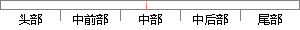

模型平均能够奏效的原因是不同的模型通常不会在测试集上产生完全相同的误差。
片段位置图

相似结果|
1
原句片段：模型平均能够奏效的原因是不同的模型通常不会在测试集上产生完全相同的误差。
相似片段 1：作用于输出目标——显示对标签上的噪声进行建模 其中标签平滑的优势是能够防止模型...奏效的原因是不同的模型通常不会在测试集产生完全相同的误差。 采用模型平均策...
相似片段 2：这是机器学习中常规策略的一个例子,被称为模型平均。采用这种策略的技术被称为集成方法。 模型平均奏效的原因是不同的模型通常不会在测试集上产生完全相同的误差。...
相似片段 3：这是机器学习中常规策略的一个例子,被称为模型平均。 采用这种策略的技术被称为集成方法。 模型平均奏效的原因是不同的模型通常不会在测试集上产生完全相同的误差...
相似片段 4：模型平均(model averaging)奏效的原因是不同的模型通常不会在测试集上产 生完全相同的误差。 不同的集成方法以不同的方式构建集成模型。例如,集成的每个成员可以使...
|
※ 片段修改建议 ※
近似词参考：- 模型：模子
- 平均：均匀
- 能够：可以或许
- 奏效：见效
- 不同：分歧 差别
- 模型：模子
- 通常：凡是 每每 平常 平日
- 产生：发生 孕育发生
- 误差：偏差
系统自动生成语句：模子均匀可以或许见效的原因是分歧的模子凡是不会在测试集上发生完全相同的偏差。
注：本片段修改建议为系统自动生成，仅供参考。